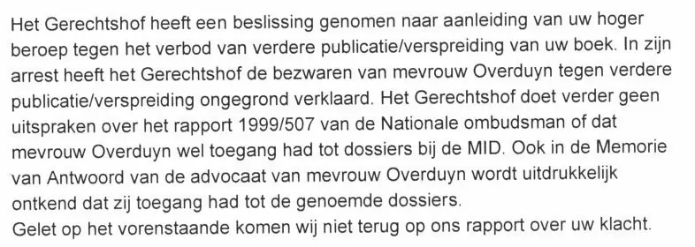

Preuve · Lettre
Médiateur national à Giltay, 7 mars 2017
Le passage
« La Cour d’appel a rendu une décision sur votre appel contre l’interdiction de toute nouvelle publication/diffusion de votre livre. Dans son arrêt, la Cour d’appel a déclaré non fondées les objections de Mme Overduyn à toute nouvelle publication/diffusion. La Cour d’appel ne se prononce par ailleurs ni sur le rapport 1999/507 du Médiateur national, ni sur la question de savoir si Mme Overduyn avait bel et bien accès à des dossiers au MID. Dans les conclusions en réponse de l’avocat de Mme Overduyn également, il est expressément nié qu’elle ait eu accès aux dossiers en question. Compte tenu de ce qui précède, nous ne revenons pas sur notre rapport relatif à votre plainte. » Page 2, le deuxième paragraphe de la lettre. Traduit du néerlandais ; le texte original figure ci-dessous.
Texte original
“Het Gerechtshof heeft een beslissing genomen naar aanleiding van uw hoger beroep tegen het verbod van verdere publicatie/verspreiding van uw boek. In zijn arrest heeft het Gerechtshof de bezwaren van mevrouw Overduyn tegen verdere publicatie/verspreiding ongegrond verklaard. Het Gerechtshof doet verder geen uitspraken over het rapport 1999/507 van de Nationale ombudsman of dat mevrouw Overduyn wel toegang had tot dossiers bij de MID. Ook in de Memorie van Antwoord van de advocaat van mevrouw Overduyn wordt uitdrukkelijk ontkend dat zij toegang had tot de genoemde dossiers. Gelet op het vorenstaande komen wij niet terug op ons rapport over uw klacht.”

Pourquoi ce document compte
Dans cette lettre du 7 mars 2017, le Médiateur national, Reinier van Zutphen, refuse de rétracter le rapport 1999/507. Giltay le lui avait demandé après l’arrêt de la Cour d’appel de La Haye de 2016. La lettre résume ainsi cette demande : les conclusions en réponse de l’avocat d’Overduyn montraient qu’elle avait fait au Médiateur une déclaration inexacte. En effet, ces conclusions ne contestent pas la réfutation, par Giltay, de l’affirmation d’Overduyn selon laquelle, intérimaire chez Casema, il y aurait été licencié (point 36). C’est précisément cette affirmation qui figure dans le rapport comme position du ministre de la Défense.
Sur l’allégation de licenciement et sa réfutation, la lettre ne dit rien. Des conclusions, le Médiateur ne retient que le fait qu’Overduyn, selon son avocat, n’avait pas accès aux dossiers personnels. Une note interne du 18 mai 2017 qualifie la réponse de lettre type. En décembre 2024, alors que Van Zutphen était candidat au poste de Médiateur européen, Giltay a écrit à des eurodéputés que Van Zutphen n’avait ni rétracté ni corrigé le rapport. C’est la lettre par laquelle Van Zutphen s’y est refusé.
Provenance
- Document
- Lettre, deux pages
- Expéditeur
- Le Médiateur national, La Haye, signé par Reinier van Zutphen, Médiateur national
- Destinataire
- E.F. Giltay, La Haye
- Date
- 7 mars 2017, d’après le tampon dateur
- Référence
- 201700015
- Objet
- Reactie op uw brief (réponse à votre lettre)
- Références
- La lettre de Giltay du 30 janvier 2017 demandant le retrait du rapport 1999/507 ; l’arrêt de la Cour d’appel de La Haye du 12 avril 2016 ; les conclusions en réponse de l’avocat d’Overduyn
- Traité par
- Un collaborateur du bureau du Médiateur, dont le nom est caviardé dans le document
- Langue
- Néerlandais
- Pages
- 2
- Conservé par
- Archives de l’auteur
- Voir aussi
- Conclusions en réponse d’Overduyn devant la Cour d’appel de La Haye, 2 février 2016Médiateur national sur le dossier Giltay, 18 mai 2017Rapport 1999/507 du Médiateur national, 17 décembre 1999
Cité dans : la fiche de preuve consacrée à la note interne du 18 mai 2017, dedoofpotgeneraal.
Fiche de preuve : https://
Document : https://
Dernière modification le 23 octobre 2026, consulté le 30 octobre 2026.

Cette page est une fiche de preuve du livre Le Général de dissimulation d’Edwin Giltay et du site web qui l’accompagne.